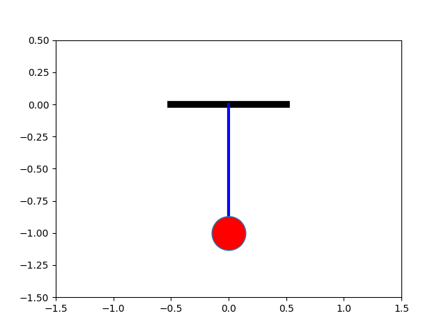
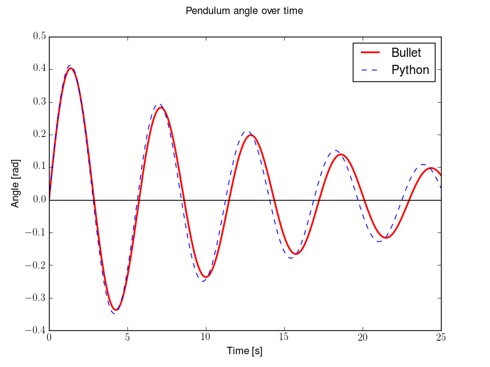

Problem 2
Investigating the Dynamics of a Forced Damped Pendulum
Introduction
The forced damped pendulum is a remarkable system that bridges the gap between predictable periodic motion and the seemingly erratic world of chaos. Despite its simple structure a pendulum experiencing damping and an external driving force its behavior can become astonishingly complex. This system serves as a key model in nonlinear dynamics, shedding light on concepts like resonance, bifurcations, and chaotic motion, which appear in physics, engineering, and even biological systems.

Mathematical Framework
The motion of a forced damped pendulum is described by the nonlinear second-order differential equation:
\(\frac{d^2\theta}{dt^2} + \gamma \frac{d\theta}{dt} + \omega_0^2 \sin(\theta) = F \cos(\omega t)\)
where: - $\theta $ is the angular displacement of the pendulum, - $\gamma $ represents the damping coefficient, controlling energy dissipation, - $\omega_0 $ is the natural frequency of the undriven pendulum, - $F $ is the amplitude of the external periodic force, - $\omega $ is the driving frequency.
This equation encapsulates a rich interplay between energy loss, nonlinear restoring forces, and external periodic excitation, leading to an array of fascinating behaviors.
Methods of Analysis
Given the inherent nonlinearity of the system, direct analytical solutions are often impractical. Instead, various computational and graphical techniques are employed:
- Numerical Integration:
Solving the equation using methods like the Runge-Kutta algorithm to track the evolution of $\theta(t) $. - Phase Space Analysis:
Examining plots of (\theta, \dot{\theta}) to distinguish between periodic, quasi-periodic, and chaotic motion. - Poincaré Sections:
Recording the system’s state at discrete time intervals to reveal underlying patterns and transitions to chaos. - Lyapunov Exponents:
Measuring sensitivity to initial condition a key indicator of chaotic dynamics.
Emergence of Chaos
One of the most striking aspects of the forced damped pendulum is its ability to exhibit chaos under certain parameter settings. Hallmarks of chaotic motion include:
- Exponential Sensitivity to Initial Conditions:
Small differences in starting conditions lead to vastly different trajectories over time. - Aperiodic Behavior:
Unlike regular oscillations, chaotic motion lacks strict repetition. - Strange Attractors:
Instead of settling into a simple fixed point or limit cycle, the system follows a complex but bounded trajectory in phase space. - Period-Doubling Route to Chaos:
Successive bifurcations in periodicity that eventually give rise to chaotic motion.
These features have profound implications, extending beyond mechanics to climate science, electrical circuits, and even neuroscience.

Conclusion
The forced damped pendulum is more than just an abstract mathematical construct it is a gateway to understanding the unpredictability inherent in many real-world systems. By tweaking parameters such as damping strength and driving frequency, researchers can explore the delicate balance between order and chaos, revealing the intricate nature of nonlinear dynamics.